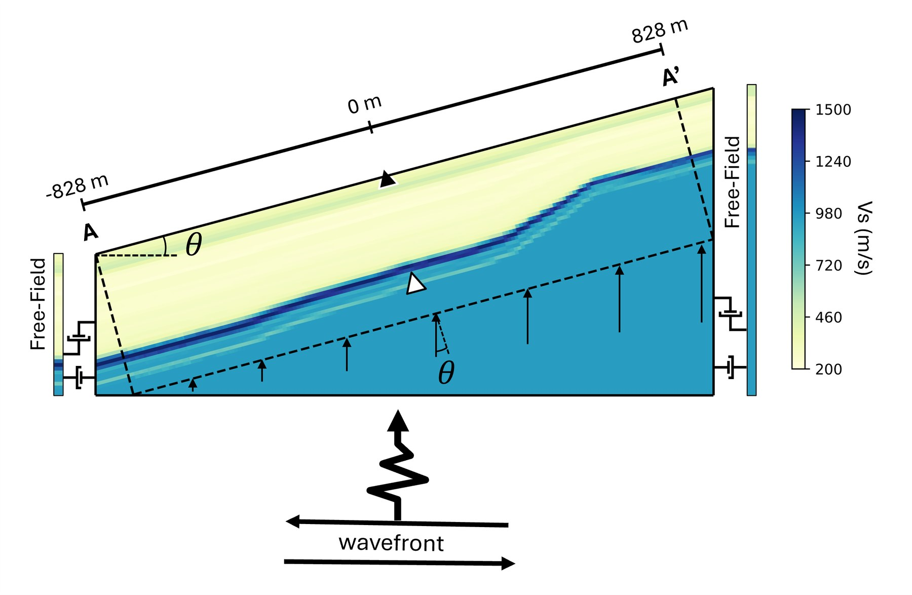
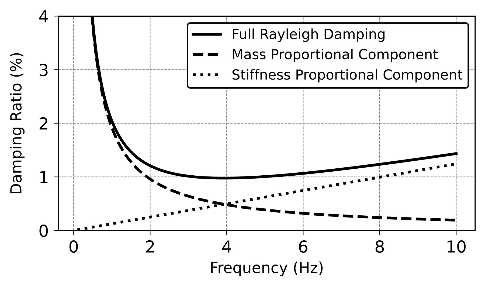

Publications
3 journal articles, 4 conference papers, 4 open-access datasets, and 6 technical reports. See also Google Scholar.
Grand Teton National Park · photo by Nishkarsha

Effects of varying incident wave inclination and azimuthal angles on multi-dimensional ground response analyses at the Delaney Park downhole array site
N. Dawadi, B. R. Cox
Soil Dynamics and Earthquake Engineering, 2026

Insights on numerical damping formulations gained from calibrating 2D ground response analyses at downhole array sites
N. Dawadi, K. Mohammadi, M. M. Hallal, B. R. Cox
Earthquake Spectra, 2026
An open-access dataset of active-source and passive-wavefield DAS and nodal station measurements at the Newberry Florida site
A. Abbas, B. R. Cox, K. T. Tran, I. Corey, N. Dawadi
Seismological Research Letters, 2023
In preparation: N. Dawadi, B. R. Cox. “Three-dimensional nonlinear site response analyses at the Delaney Park downhole array site.”
Comparative assessment of damping models for small-strain ground response analysis: A case study at the Delaney Park downhole array site
N. Dawadi, K. Mohammadi, M. M. Hallal, B. R. Cox
21st International Conference on Soil Mechanics and Geotechnical Engineering (ICSMGE), Vienna, 2026
In-situ estimation of a pseudo-3D model of shear wave velocity and small strain damping ratio using surface wave testing
M. Aimar, A. Abbas, N. Dawadi, B. R. Cox, S. Foti
21st ICSMGE, Vienna, 2026
Three-dimensional ground response analyses at the I-15 downhole array site near Salt Lake City
N. Dawadi, T. S. Jackson, B. R. Cox
Geo-Congress 2026, Salt Lake City, pp. 504–514
Two-dimensional ground response analyses at the Delaney Park downhole array site
N. Dawadi, M. M. Hallal, B. R. Cox
8th International Conference on Earthquake Geotechnical Engineering, Osaka, 2024
The I-15 Downhole Array (I15DA): A database of non-invasive site characterization data and aftershock ground motions following the 2020 M5.7 Magna, Utah earthquake
B. R. Cox, T. Jackson, N. Dawadi, K. Cannon
DesignSafe-CI, 2025
Raw field measurements from Garner Valley, Borrego Valley, Treasure Island, and Delaney Park downhole arrays
M. M. Hallal, B. R. Cox, N. Dawadi, D. Teague
DesignSafe-CI, 2025
Geotechnical site characterization at the Drainage Farm site
A. Abbas, B. R. Cox, N. Dawadi, T. Jackson, K. Cannon
DesignSafe-CI, 2024
Active-source and passive-wavefield DAS and nodal station measurements at the Newberry Florida site
A. Abbas, B. R. Cox, K. Tran, I. Corey, N. Dawadi, F. Menq
DesignSafe-CI, 2023
Deep shear wave velocity profiling using MASW and MAM: Energy Northwest New Nuclear Cascade Advanced Energy Facility site
B. R. Cox, N. Dawadi, M. Bhaumik, B. Budge
Report COX26-03, Utah State University, 2026
Calibrating ground response analyses beneath an instrumented bridge using the I-15 borehole array and ground motions from the 2020 M5.7 Magna earthquake
B. R. Cox, T. Jackson, N. Dawadi
MPC 24-517, Mountain-Plains Consortium, 2024
Four further reports (Palisades NPP, Kemmerer Unit 1, USU SMASH Lab) are listed in the CV.